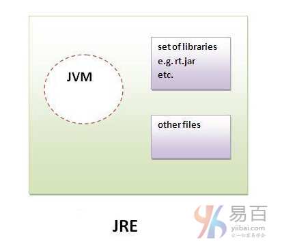
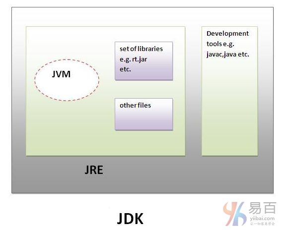

|
|
☰ 目录
05 JVM JRE 和 JDK 的区别好多开发者学习 Java 编程有若干个年头了，但真正了解JDK，JRE和JVM之间的区别应该不多，别不服，大概是因为平时都是在 如果要了解Java虚拟机的详细知识，请转到下一页。 首先，让我们来看看JDK，JRE和JVM之间的基本区别。 JVMJVM(Java虚拟机)是一个抽象机器。它是一个提供可以执行Java字节码的运行时环境的规范。 JVM可用于许多硬件和软件平台。JVM，JRE和JDK是平台相关的，因为每个OS的配置不同。 但是，Java是平台无关的。 JVM执行以下主要任务：
JREJRE是  JDKJDK是  |